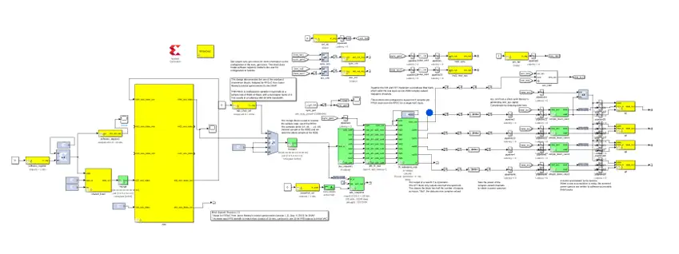
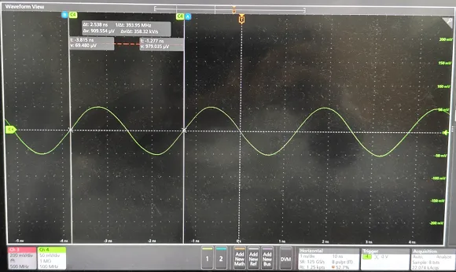
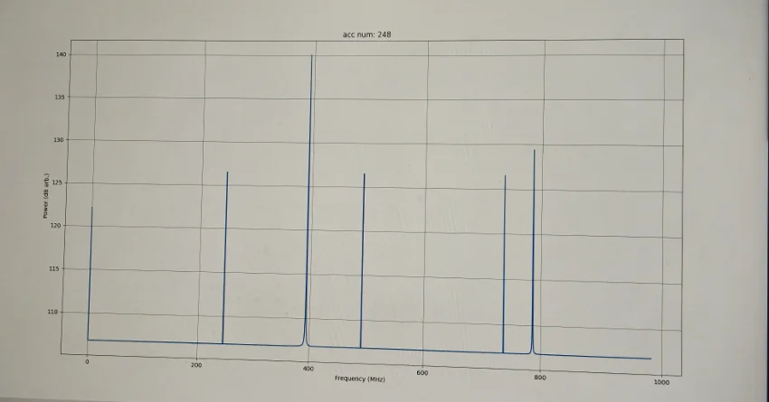
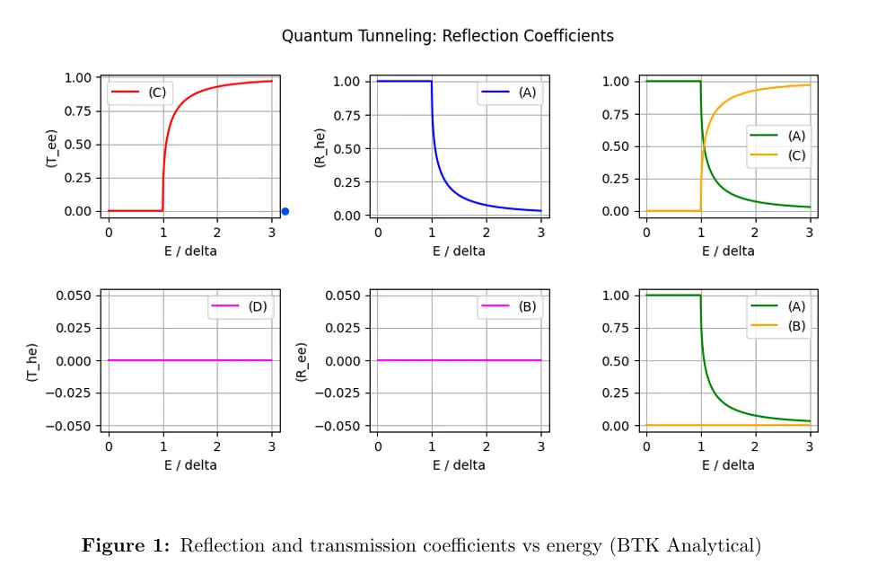
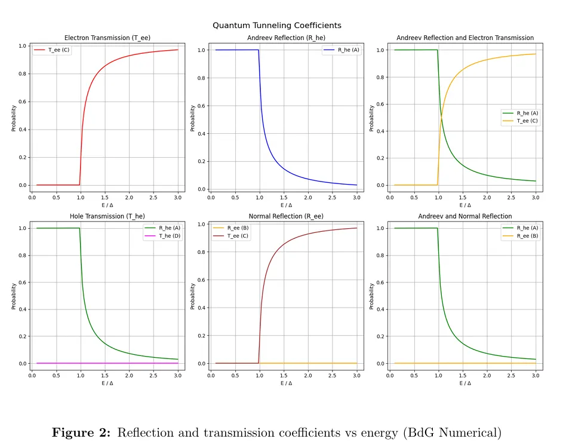

SEC-02 // RESEARCH
RADIO ASTRONOMY INSTRUMENTATION
TIFR Mumbai | Dr. Bhaswati Mookerjea | May–Jul 2026
Self-guided project in radio-astronomy instrumentation. Studied digital-spectrometer theory (sampling, FFT, polyphase filterbanks, vector accumulation) and the RFSoC-based backend design of the BVEX balloon-borne VLBI telescope. Built and tested a PFB + FFT spectrometer on an AMD-Xilinx RFSoC4x2 with the CASPER/Simulink toolflow, adapted from the CASPER tutorial design, and edited the Python scripts that generate the test tone and read out the spectrum.
A DAC→ADC loopback recovered the test tone as the dominant spectral peak, showing the chain works end to end for a single tone. Linearity, dynamic range and channel response were not characterised.
Issues documented during bring-up ↓
CAUSE: Tiles configure ADC/DAC channels in pairs. FIX: Enable both channels of the tile even if one is unused.
CAUSE: DAC inputs expect Xilinx-type signals; ADC outputs are Simulink-type. FIX: Keep Xilinx-type signals on the DAC side and Simulink-type signals on the ADC side.
CAUSE: Unconnected RFDC ports. FIX: Tie unused ADC/DAC ports to constant 0.
STATUS: Attributed to board clock leakage; not isolated by a test.

Fig 3. Combined circuit: waveform generator (left) feeding the DAC, spectrometer (right) reading the ADC.

Fig 5. Oscilloscope capture of DAC output matching the 393.216 MHz carrier.

Fig 6. Final power spectrum readout showing the 400 MHz loopback peak.
QUANTUM TRANSPORT AT N-S JUNCTIONS
IIT (BHU) Varanasi | Dr. Panch Ram | May–Jul 2025
Computed Andreev reflection and electron/hole transmission probabilities across a superconducting gap using the analytical BTK expressions in Python. Solved the Bogoliubov–de Gennes (BdG) equations numerically via wavefunction matching. Reproduced the standard BTK result for a transparent interface (Z = 0) with two independent methods.

Fig 1. Reflection and transmission coefficients vs energy (BTK Analytical).

Fig 2. Reflection and transmission coefficients vs energy (BdG Numerical).
SEC-03 // INSTRUMENT
Interactive version of the calculation from my IIT (BHU) project.
HOW THIS WORKS ↓
The Andreev conductance doubling at Z = 0 below the gap is the signature of a perfectly transparent N–S interface; increasing Z suppresses it and turns the gap region into a dip.
For E < Δ: C = D = 0
A = Δ2 / [E2 + (Δ2 − E2)(1 + 2Z2)2], B = 1 − A
For E > Δ:
u02 = 0.5 × [1 + √(E2 − Δ2)/E], v02 = 1 − u02
γ2 = [u02 + Z2(u02 − v02)]2
A = u02v02 / γ2, B = (u02 − v02)2Z2(1 + Z2) / γ2
C = u02(u02 − v02)(1 + Z2) / γ2, D = v02(u02 − v02)Z2 / γ2
Conductance: GNS / GNN = (1 + A − B)(1 + Z2)
SEC-04 // FIELD KIT
SEC-05 // OFF-DUTY
Outside hitter (volleyball) & 100m/200m sprinter. IISM 2025 (Bronze). Regional KVS Meets 2017-2020 (Multiple Gold/Bronze).